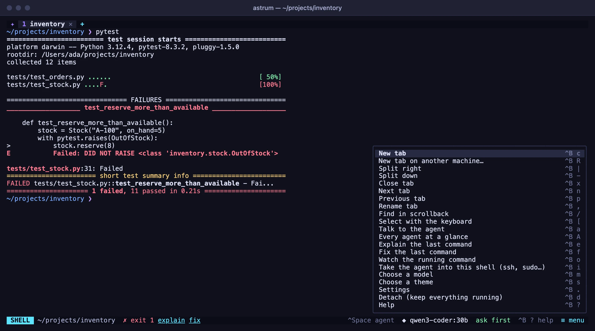
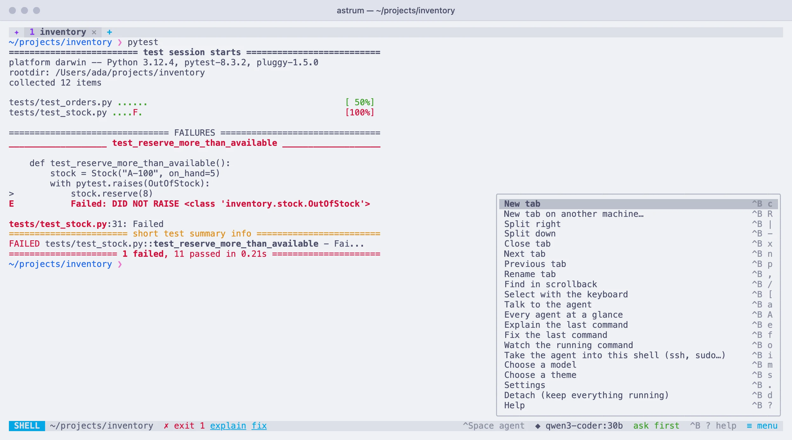

The mouse and the keys
Every click and menu in Astrum, then the keys: how the prefix key works, how to change the keys, and the full list.
Everything with the mouse
Nothing in Astrum needs a keyboard shortcut. The tab bar, the status bar and every pane can be clicked, right-clicking a tab or a pane gives a menu, and ≡ menu at the bottom right lists everything else. The keys are there for people who want them, and every menu shows the key beside its entry.
| Do this | With the mouse | With the keyboard |
|---|---|---|
| New tab | click + in the tab bar | Ctrl+B c |
| New tab on another machine | ≡ menu → New tab on another machine… | Ctrl+B R |
| Go to a tab | click it, or turn the wheel over the tab bar | Ctrl+B n / p / 1 to 9 |
| Move a tab | drag it along the tab bar | Ctrl+B < / > |
| Rename a tab | right-click it → Rename | Ctrl+B , |
| Close a tab | click its ✕, or middle-click it | Ctrl+B x in its last pane, or exit |
| Split a pane | right-click it → Split right / Split down | Ctrl+B | / - |
| Go to another pane | click it | Ctrl+B and an arrow key |
| Resize panes | drag the divider between them | |
| Zoom a pane, and back | right-click it → Zoom / Unzoom | Ctrl+B z |
| Close a pane | right-click it → Close pane | Ctrl+B x, or exit in its shell |
| Scroll back | turn the mouse wheel over the pane | Shift+PageUp / Shift+PageDown |
| Find in the scrollback | right-click the pane → Find…, then ↑ ↓ on the search bar | Ctrl+B / |
| Copy text | drag across it (copied when you let go); double-click a word | Ctrl+B [ (copy mode) |
| Open or copy a link | right-click it → Open link / Copy link, or Ctrl-click it | |
| Talk to the agent | click the SHELL chip | Ctrl+Space |
| Show or hide the agent panel | ≡ menu → Talk to the agent / Hide the agent panel | Ctrl+B a |
| Resize the agent panel | drag the line between it and the shell | |
| Explain or fix a failed command | click explain or fix on the status bar | Ctrl+B e / f |
| Have the agent watch a running command | click watch on the status bar | Ctrl+B o |
| Take the agent into a shell you reached | click take the agent in on the status bar | Ctrl+B i |
| See every tab's agent | click agents working (or asking) on the status bar, or ≡ menu → Every agent at a glance | Ctrl+B A |
| Choose a model | click the model on the status bar | Ctrl+B m |
| Change how much the agent may do | click ask first (or the level shown) on the status bar | Shift+Tab in the agent panel |
| Choose a theme | ≡ menu → Choose a theme | Ctrl+B s |
| Settings | ≡ menu → Settings | Ctrl+B . |
| See every key | click ? help on the status bar | Ctrl+B ? |
| Leave, keep everything running | close the window, or ≡ menu → Detach | Ctrl+B d |
| Detach every window from the session | close each window | Ctrl+B D |
The tab bar
- Click a tab to go to it. Press on it and drag to move it along the bar.
- Click a tab's
✕, or middle-click the tab, to close it. - Click
+for a new tab. - Turn the mouse wheel anywhere over the tab bar to step through the tabs.
- Right-click a tab for its menu.
In a pane
- Click a pane to type in it.
- Drag across text to select it; it is copied when you let go. Double-click selects a word, and a third click the whole line.
- Turn the wheel to scroll whichever pane the pointer is over, without moving the keyboard there.
- Point at a link and the status bar shows where it goes. Right-click it, or Ctrl-click it, to open it.
- Drag the line between two panes to resize them.
- Right-click for the pane's menu.
The status bar
Every piece of the status bar that does something can be clicked:
| Piece | A click |
|---|---|
SHELL / ✦ AGENT | switches your typing between the shell and the agent |
^Space agent / ^Space shell | the same: a reminder of the key that does it |
explain, fix (after a command fails) | has the agent explain the failure, or fix it |
watch (while a command of yours runs) | has the agent follow the command and say how it went |
take the agent in (while ssh, sudo -s and the like run) | carries the agent into the shell you reached |
◆ and the model's name | opens the list of models |
ask first, auto read-only, ▶▶ autopilot | steps to the next level of how much the agent may do |
2 agents working, ? 1 agent asking | opens Every agent at a glance |
? help | shows every key |
≡ menu | opens the menu of everything |
On a narrow terminal, the pieces on the right give way one by one, starting with the reminder of the agent key; ≡ menu is always the last to stay. status_bar = false in the config file hides the bar altogether; Ctrl+B Space still opens the menu.
The ≡ menu
Click ≡ menu at the right-hand end of the status bar for a menu of every action, each with the key that does the same. Click an entry to do it.


It lists, in order: New tab, New tab on another machine…, Split right, Split down, Zoom pane, Close pane, Next tab, Previous tab, Rename tab, Find in scrollback, Select with the keyboard, Talk to the agent, Every agent at a glance, Explain the last command, Fix the last command, Watch the running command, Take the agent into this shell (ssh, sudo…), Choose a model, Choose a theme, Settings, Detach (keep everything running), and Help.
Some entries follow the moment: Zoom pane is there only in a tab with more than one pane, and reads Unzoom pane while one is zoomed; Close pane reads Close tab when the tab has only one; Talk to the agent reads Hide the agent panel while the panel is open.
From the keyboard, Ctrl+B Space opens the menu. ↑ and ↓ move through it and Enter picks the entry; or press an entry's own key (c for New tab, say) to pick it at once. Any other key, or a click outside the menu, closes it.
Right-click menus
Right-click a tab or a pane for a menu of what can be done with it. Click an entry, or use ↑ ↓ and Enter; a click outside, or another right-click, closes it.
On a tab
| Entry | Does |
|---|---|
| Rename | names the tab |
| Move left, Move right | moves the tab one place (offered where there is a place to move to) |
| New tab | opens a new tab |
| Close tab | closes the tab and its shells |
On a pane
| Entry | Does |
|---|---|
| Open link, Copy link | when you right-click a link: opens it (web and mail links only), or copies where it goes |
| Split right, Split down | splits the pane in two |
| Find… | opens a search of the pane's scrollback |
| Zoom, Unzoom | lets the pane fill the tab, and back (with more than one pane) |
| Close pane | closes the pane; reads Close tab when it is the tab's only pane |
Right-clicking a pane the keyboard is not in moves the keyboard there first.
Programs that use the mouse
Programs such as vim and htop take the mouse for themselves, so clicks, drags, the wheel and right-clicks in their pane go to them. Hold Shift to have Astrum take it instead: Shift and drag selects text, Shift and right-click gives Astrum's menu.
How the keys work
The prefix key
Most of Astrum's keys come after a prefix key, Ctrl+B unless you change it: press Ctrl+B, let go, then press the key. Ctrl+B c is a new tab. Keys are case-sensitive: Ctrl+B d detaches this window, Ctrl+B D every window.
After the prefix, the status bar shows PREFIX and what can follow it, each with its key. They can be clicked as well as typed, so the prefix also works as a way into the menu. They wait ten seconds for you, and moving the pointer starts the wait again. When they do not all fit, ≡ more opens the full menu. Esc, or a key that is none of these, lets go without doing anything.
A few things to know:
- If you are still holding Ctrl when you press the second key, it works all the same: Ctrl+B Ctrl+C is Ctrl+B c, unless you have given that key with Ctrl something of its own.
- Pressing the prefix twice sends it to the program in the pane, for a program that uses Ctrl+B itself.
- On screen, keys are written as terminals write them:
^Bis Ctrl+B,^B cis Ctrl+B then c.
Keys without the prefix
- Ctrl+Space switches your typing between the shell and the agent.
- Shift+PageUp and Shift+PageDown page through the scrollback (unless a full-screen program has the pane).
- In the agent panel, Esc stops the agent and Shift+Tab steps through how much it may do on its own. The agent has the panel's other keys.
- Any key you give an action with
ctrloraltin it, as below.
The help screen
Click ? help on the status bar, or press Ctrl+B ?, for one screen of the keys, grouped as tabs, the agent, and scrolling and copying. It shows the keys as you have set them. Any key or a click closes it.
Changing the keys
Every key Astrum uses can be changed, in the config file. (The settings screen has the settings most people change; keys are not among them.) astrum config says where the file is, and astrum config --init writes a commented starter file there if there is none. A change takes effect in the running session as soon as you save the file: Astrum says "Settings reloaded", or says what is wrong with the file and changes nothing. Settings has the rest of the file.
The prefix and the agent key
Two settings at the top of the file:
prefix = "ctrl+a" # in place of ctrl+b
agent_key = "f2" # in place of ctrl+spaceOn macOS, Ctrl+Space switches input sources when several keyboard layouts are turned on, and some shell plugins use it. If it does something else for you, pick another agent_key, such as "ctrl+backslash" or "f2".
The [keys] table
Every other key is in a [keys] table, by the name of what it does:
[keys]
new_tab = ["c", "ctrl+t"] # Ctrl+B c as before, and Ctrl+T directly
next_tab = "alt+right"
prev_tab = "alt+left"
split_right = "v"
detach_all = "none"How it is read:
- A plain key is pressed after the prefix. A key with
ctrloraltin it works by itself, with no prefix. To put one of those after the prefix instead, writeprefixin front:"prefix ctrl+t". - Naming an action replaces all the keys it had. A list gives it several, and
"none"(or an empty list) leaves it with none. - A key does one thing. Giving it to an action takes it from whatever had it, so two actions can swap keys. If the table gives the same key to two actions, Astrum says so.
- Letters are told apart by case:
"D"is Shift and d, and so is"shift+d". Shift can be written only where it makes another character (a capital letter,shift+tab).shift+left,shift+f5andctrl+shift+tare refused, because most terminals do not say whether Shift was held with those keys. - The action names are the ones in the list below and in
astrum keys. Case does not matter, and-works in place of_. - A name or a key that Astrum cannot read is reported, and the rest of the table still applies.
astrum keysreports it too.
The names of keys:
| Write | For |
|---|---|
a single character: c, D, ,, /, [ | that key (a capital is Shift and the letter) |
space, enter, tab, shift+tab, esc, backspace, delete, insert | those keys |
up, down, left, right, home, end, pageup, pagedown | those keys |
f1 to f24 | the function keys |
backslash, plus, minus | the \, + and - keys |
ctrl+ or alt+ in front (option+ and meta+ mean Alt) | the key with Ctrl or Alt held |
In macOS terminal apps, the Option key reaches programs as Alt only when the terminal is set to send it that way; check your terminal's settings if an alt+ key does nothing.
The hint line after the prefix, the ≡ menu and the help screen all show the keys as you have set them. When a new release brings a new key that you had already given to something else, it stays yours, and the new action can still be reached from the menu.
Seeing the keys you have
astrum keyslists every action with the keys it has now and what it does, the same list as below but with your changes in it:
ACTION KEYS WHAT IT DOES
new_tab c, t open a new tab
next_tab n, tab go to the next tab
prev_tab p, shift+tab go to the previous tabEvery key
Every action, what it does, and the keys it has before you change any. A plain key is pressed after the prefix, Ctrl+B.
| What it does | Keys | Its name in [keys] |
|---|---|---|
| Open a new tab | Ctrl+B c or Ctrl+B t | new_tab |
| Go to the next tab | Ctrl+B n or Ctrl+B Tab | next_tab |
| Go to the previous tab | Ctrl+B p or Ctrl+B Shift+Tab | prev_tab |
| Go to tab 1 | Ctrl+B 1 | tab_1 |
| Go to tab 2 | Ctrl+B 2 | tab_2 |
| Go to tab 3 | Ctrl+B 3 | tab_3 |
| Go to tab 4 | Ctrl+B 4 | tab_4 |
| Go to tab 5 | Ctrl+B 5 | tab_5 |
| Go to tab 6 | Ctrl+B 6 | tab_6 |
| Go to tab 7 | Ctrl+B 7 | tab_7 |
| Go to tab 8 | Ctrl+B 8 | tab_8 |
| Go to tab 9 | Ctrl+B 9 | tab_9 |
| Split the pane, side by side | Ctrl+B | or Ctrl+B % | split_right |
| Split the pane, one above the other | Ctrl+B - or Ctrl+B " | split_down |
| Move to the pane on the left (or the previous tab) | Ctrl+B ← | focus_left |
| Move to the pane on the right (or the next tab) | Ctrl+B → | focus_right |
| Move to the pane above | Ctrl+B ↑ | focus_up |
| Move to the pane below | Ctrl+B ↓ | focus_down |
| Let the pane fill the tab, and back | Ctrl+B z | zoom |
| Close the pane, or the tab when it is the last | Ctrl+B x or Ctrl+B w | close |
| Move the tab one place left | Ctrl+B < | move_tab_left |
| Move the tab one place right | Ctrl+B > | move_tab_right |
| Leave, keeping everything running | Ctrl+B d or Ctrl+B q | detach |
| Detach every terminal from the session | Ctrl+B D | detach_all |
| Show or hide the agent panel | Ctrl+B a | agent_panel |
| Rename the tab | Ctrl+B , or Ctrl+B r | rename |
| Have the agent explain the last command | Ctrl+B e | explain |
| Have the agent fix the last command | Ctrl+B f | fix |
| Have the agent watch the running command | Ctrl+B o | watch |
| Choose a model | Ctrl+B m | model |
| Choose a theme | Ctrl+B s or Ctrl+B T | theme |
| Show the keys | Ctrl+B ? or Ctrl+B h | help |
| Search the scrollback | Ctrl+B / | find |
| Select with the keyboard | Ctrl+B [ | copy_mode |
| Scroll back a page | Ctrl+B PageUp | page_up |
| Scroll forward a page | Ctrl+B PageDown | page_down |
| Open the menu of all of these | Ctrl+B Space | menu |
| Open the settings | Ctrl+B . | settings |
| Have the agent work in the shell this pane has reached (ssh, a container, sudo) | Ctrl+B i | agent_here |
| Open a tab on another machine, whose shells stay there when the connection drops | Ctrl+B R | remote_tab |
| Every tab's agent at a glance: what each is doing, and answering one that asks | Ctrl+B A | agents |